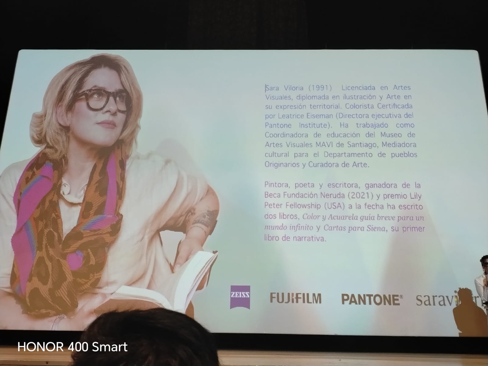

Introducción a la Página
Bienvenidos a mi página web desarrollada con FrontEnd. Este espacio digital tiene como propósito presentar mi experiencia en el evento de Moda ECCI, donde tuvimos la gran oportunidad de asistir a la conferencia de una experta en el color como lo es Sara Viloria. Ver cómo habla del color y su visualización cada día frente a él es algo verdaderamente admirable; de ello podemos extraer valiosos aprendizajes para nuestro proceso formativo, y es precisamente aquí donde quiero plasmar todo lo aprendido.
Objetivo de la Página
El objetivo primordial de esta página web es aplicar de manera práctica nuestras habilidades y destrezas en herramientas FrontEnd esenciales como HTML5, CSS3 y JavaScript, tomando como base y eje temático todo nuestro proceso de aprendizaje y vivencias recolectadas en el evento académico Moda ECCI.

Fotografía Bienvenidos conferencia Sara Viloria.